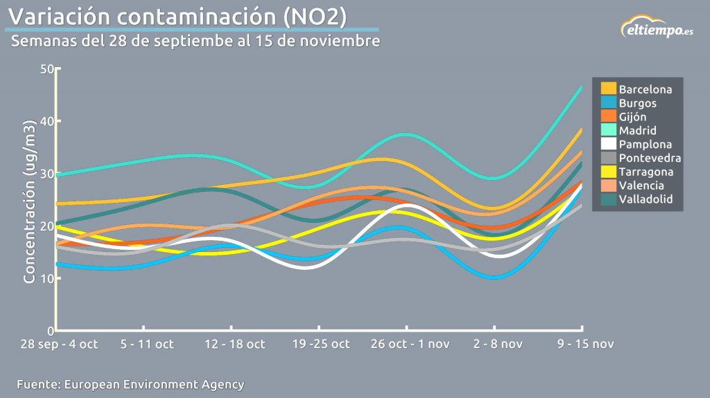

El dióxido de nitrógeno se produce cuando el oxígeno (O2) y el nitrógeno (N2) presentes en el aire se combinan químicamente, algo que no ocurre a temperaturas normales, pero si en otras condiciones, como en las altas temperaturas generadas por tormentas de rayos a altitudes elevadas. Otra condición en la que el oxígeno y el nitrógeno se combinan para generar dióxido de nitrógeno es en las altas temperaturas generadas al interior de motores de combustión interna. Efectivamente, la combustión de combustibles fósiles en motores de combustión interna produce óxido nítrico (NO) que reacciona rápidamente con oxígeno ambiental para producir dióxido de nitrógeno (NO2).
El dióxido de nitrógeno u óxido de nitrógeno (IV) (NO2), es un compuesto químico formado por los elementos nitrógeno y oxígeno, uno de los principales contaminantes entre los varios óxidos de nitrógeno.
Se forma como subproducto en los procesos de combustión a altas temperaturas, como en los vehículos motorizados y las plantas eléctricas. Por ello es un contaminante frecuente en zonas urbanas.
Aqui tenemos un gráfico de la variación de las medidas de NO2 en las distintas comunidades muy recientemente:
El valor actual de 40 µg/m3 (de media anual) fijado en las Directrices de la OMS para proteger a la población de los efectos nocivos para la salud del NO2 gaseoso no ha cambiado respecto al recomendado en las directrices anteriores.
40 μg/m3 de media anual.
200 μg/m3 de media en 1h.
En concentraciones de corta duración superiores a 200 mg/m3, es un gas tóxico que causa una importante inflamación de las vías respiratoria.
Es la fuente principal de los aerosoles de nitrato, que constituyen una parte importante de las PM2.5 y, en presencia de luz ultravioleta, del ozono.
Estudios epidemiológicos han revelado que los síntomas de bronquitis en niños asmáticos aumentan en relación con la exposición prolongada al NO2. La disminución del desarrollo de la función pulmonar también se asocia con las concentraciones de NO2 registradas (u observadas) actualmente en ciudades europeas y norteamericanas.
Saber por que zonas los valores de NO2 son más o menos tóxicos es muy importante.
Conocer los valores a distintos instantes de tiempo es muy importante para conocer la variación de estas medidas.
Conociendo la información que necesitas podrás evitar respirar un aire tóxico y muy impuro.
Aplicando lo que sabes encontrarás el camino de la salud y no de los gases contaminantes.